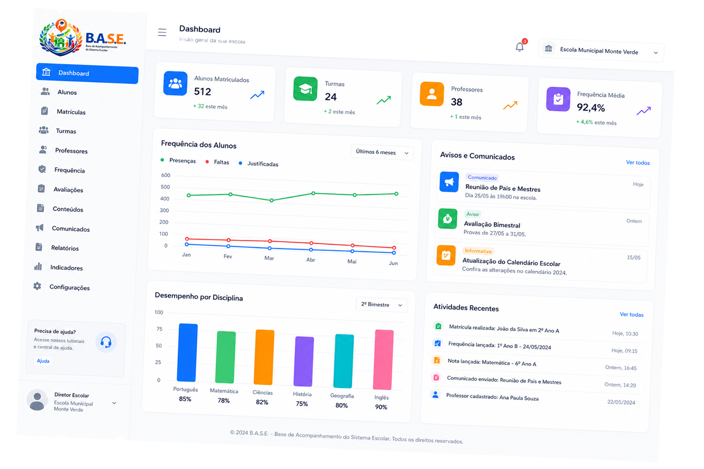

O B.A.S.E. — Base de Acompanhamento do Sistema Escolar — reúne informações acadêmicas, comunicação e gestão em um único ecossistema digital.

O B.A.S.E. conecta famílias, alunos, professores e equipes escolares para tornar o acompanhamento da vida escolar mais simples e transparente.
Acompanhe presença, faltas, notas e evolução acadêmica de forma clara e organizada.
Calendário escolar centralizado com provas, eventos, reuniões e outros compromissos.
Notificações e comunicados oficiais com confirmação de leitura, reduzindo ruídos na comunicação.
Registro de ocorrências disciplinares e pedagógicas com histórico e acesso controlado.
Dados essenciais centralizados para apoiar decisões e agilizar o trabalho das equipes.
Permissões adequadas para alunos, responsaveis, professores, orientação, coordenação, secretaria e direção.
Uma plataforma com diferentes experiências para quem ensina, acompanha e administra.
O projeto foi pensado para gerar ganhos concretos na comunicação, nos processos e no uso
de recursos.
Facilitar a vida escolar dos mais de 18.300 matriculados na rede municipal, garantindo maior segurança durante os anos de estudo.
menos necessidade de comunicação presencial
Conectar mais de 20.000 responsáveis às mais de 70 escolas municipais, permitindo acompanhar atividades acadêmicas, faltas, eventos e notas em tempo real.
Enfrentar desafios de comunicação, processamento manual de dados e acompanhamento acadêmico dos alunos.
Meta de implantação na rede municipal.